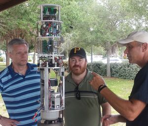
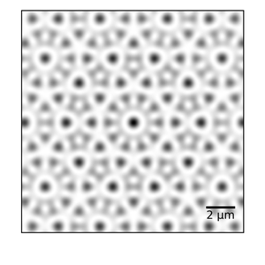

Research
Broadly speaking, I work on atomic physics, but also applications of spectroscopy to molecular systems. All of my research is done with the help of undergraduate students. If you’re interested in working on any of these projects, please contact me. No previous experience is required, just curiosity and a willingness to learn new things!
All of this is possible because of my wonderful student researchers and collaborators.
See the publications page for links to my papers.
Geometric descriptions of geometric optics
This may sound a bit odd, but we don’t typically use a lot of geometry when teaching geometric optics. The usual way that these topics are taught and used is though algebraic methods (e.g. solving Gauss’s imaging equation). By rethinking where these equations come from, we gain insight into the relationships between light rays and images. Mathematical tools like projective geometry (which has mostly been forgotten since the end of the 1800s) and Clifford’s geometric algebra unify these various descriptions of light.
Mathematical analysis of vibrato in music performance
Because sound and light are both waves, many of the physics tools used to describe light and other electromagnetic radiation like radio waves can also be used to describe sound. I’m working with Paul Doerksen in Duquesne’s Mary Pappert School of Music to build a fuller mathematical description of how musicians produce vibrato when they perform using techniques originating from radio communication.
Laser spectroscopy for chemistry applications
Infrared Multi-Photon Dissociation of gas-phase ions

Infrared Multi-Photon Dissociation uses high flux mid-IR lasers to heat molecules to their breaking point. We measure the fragmentation products using mass spectrometry to infer structural information and gas-phase reaction pathways. I do this work in collaboration with Michael Van Stipdonk in the Chemistry and Biochemistry Department at Duquesne, both in Mike’s lab, where I’ve installed a 20-W CO2 laser onto his linear ion trap (Thermo-Fisher LTQ), and at free electron user facilities such as the Free Electron Laser for Infrared eXperiments (FELIX) at Radboud University in Nijmegen, the Netherlands and Le Centre Laser Infrarouge d’Orsay (CLIO) at Université Paris-Sud in Orsay, France.
Optical detection of contaminants in water

In collaboration with Partha Basu at IUPUI and David Kahler in Duquesne’s Center for Environmental Research and Education, we’ve build a small handheld spectrometer/colorimeter that can (1) use a specific turn-on fluorophor for detecting lead in drinking water and (2) perform a suite of color-based water quality measurements. The latest version of the device is sensitive to lead down to about 2 ppb concentrations (by mass), below the EPA action limit of 15 ppb. Another test we are developing is measuring fluoride concentrations and water hardness. Our hope is to make several copies of the device and test homes in the neighborhoods of Pittsburgh near Duquesne and at test sites in South Africa.
See my recent blog post for more detail.
Previous funding from an InnovationWorks/Department of Defense Technology Transfer Consortia award, and a Duquesne University Charles Henry Leach II grant.
Laser-Induced Fluorescence for Quantitation of Cross-Linking in Bio-polymers
This work uses fluorescent tags that bind to cross-links in bio-organic polymers. Michael Cascio (Duquesne Chemistry and Biochemistry) and I are building a system to put a microfluidics fluorescence cell in tandem with a mass spectrometer to allow quantitative measurements of cross-linking reaction efficiencies.
Automated sampling system for river and lake water

My group along with Michael Van Stipdonk (Duquesne Chemistry) and David Fries (University of South Florida - St. Petersburg) worked on an automated sampling system to collect water samples in rivers and lakes. The system collects samples for later mass spectrometry analysis and does realtime detection of radionuclides using a homemade gamma spectrometer.
Previous funding from a Duquense University Charles Henry Leach II grant.
Ultracold atoms in quasicrystal potentials

My main research project is studying atoms in two-dimensional optical potentials generated by interfering laser beams. The overall goal is to study the low-energy states of topologically interesting phases, such as quasicrystals (see right).
Previous funding through a New Investigator Award from the Charles E. Kaufman Foundation, a member organization of the Pittburgh Foundation (KA2015-79202) and a Duquesne University Faculty Development Fund grant.